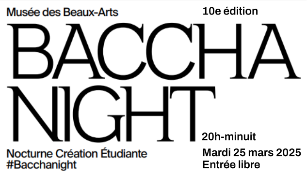

Ce projet a été réalisé dans le cadre de la Bacchanight 2025, organisée au Musée des Beaux Arts de Bordeaux.
Antoine
Aurore
Bastien
Lucas
Maxence
Noé
Les lèvres d'Isaïe purifiées par le feu - B. WEST, 1782
Portrait de Richard Robinson, archevêque d’Armagh, futur baron de Rokeby et primat d’Irlande - J. REYNOLDS, vers 1771-1775
Les bons conseils de la vieille servante - J. NORTHCOTE, 1796
L'Amour jaloux de la Fidélité - A. BELLUCCI, vers 1705-1710
